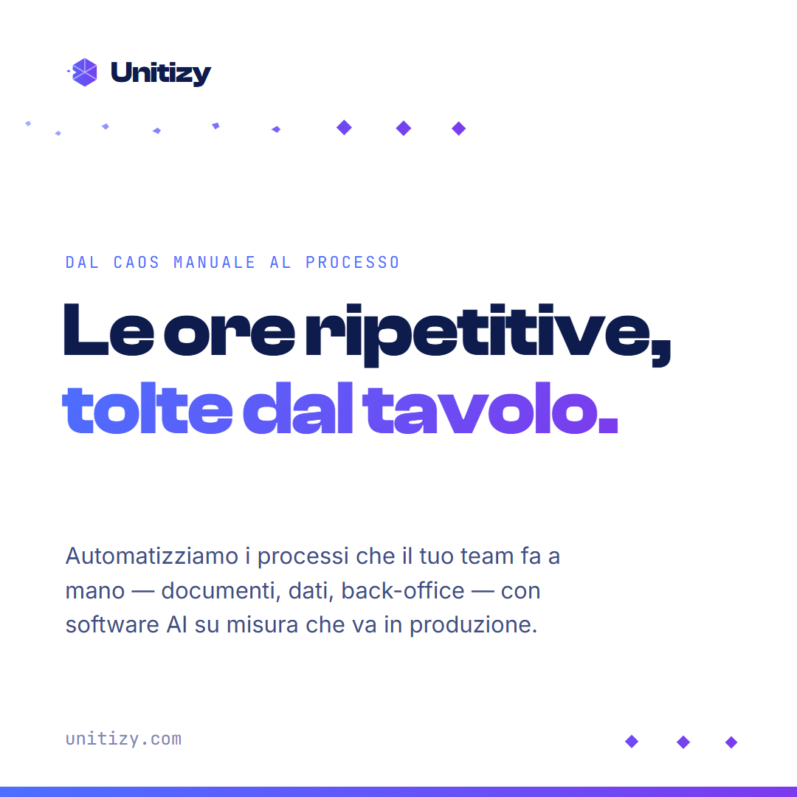
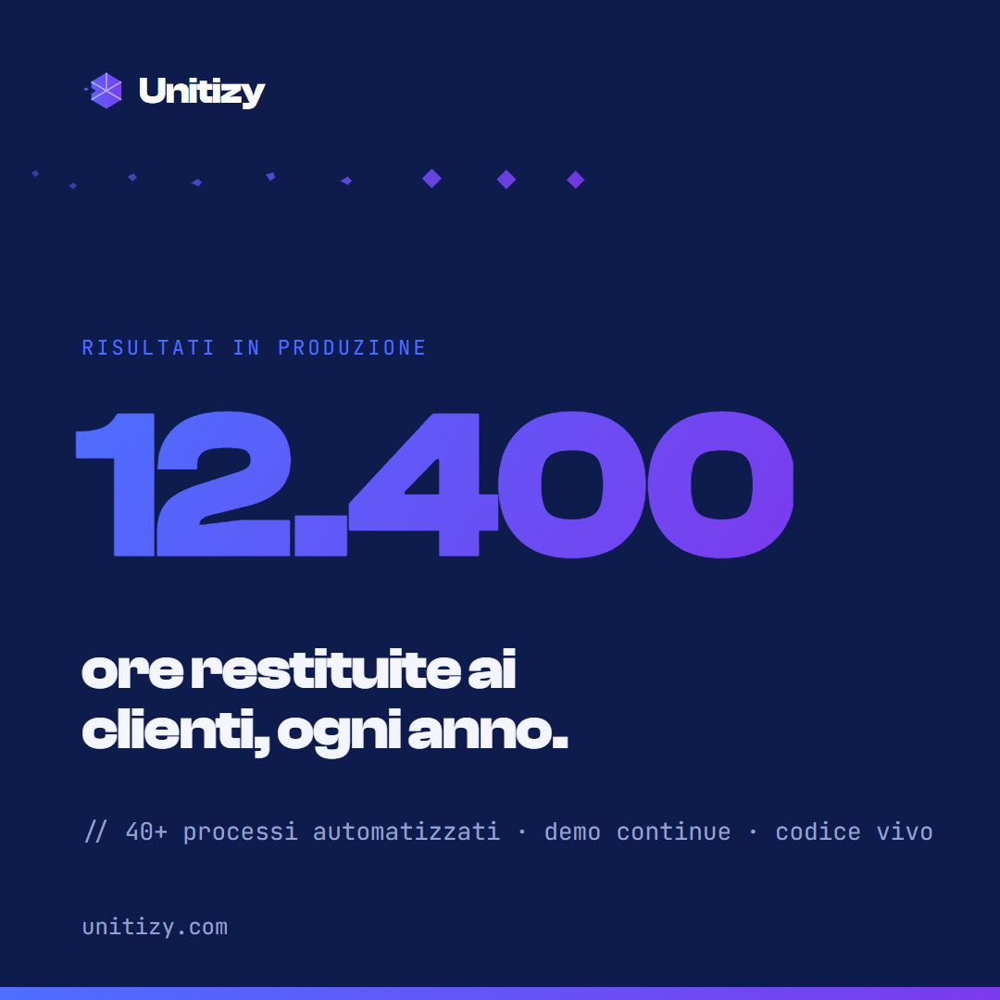
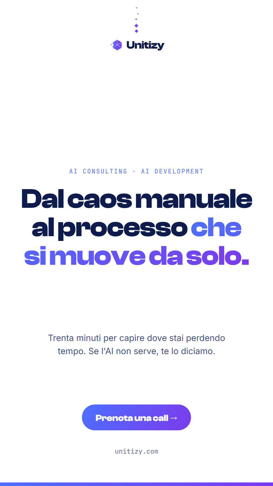
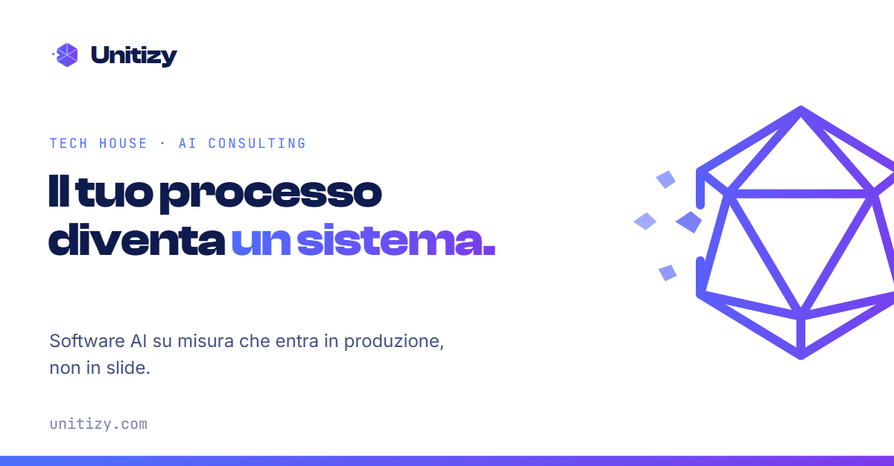

Il cristallo che si ricompone.
Il marchio racconta in un solo segno quello che Unitizy fa: frammenti sparsi — il lavoro manuale, il caos operativo — convergono e diventano una struttura ordinata e trasparente. Il solido non si sta rompendo: si sta completando.
1 · Il marchio
Versione principale. Il tratto è volutamente più solido dell'esplorazione generata: deve reggere la stampa e gli schermi piccoli.
2 · Lockup con wordmark
Il nome è sempre in Clash Display Bold, tracking -2%. Il marchio è alto quanto la x-height estesa del wordmark; lo spazio tra i due è pari alla larghezza di un frammento grande.
3 · Il glifo compatto e la scala
Sotto i 32px il master perde le linee interne: si usa il glifo compatto — pieno, con la tacca a sinistra e un solo frammento. Stessa storia, meno parole.
4 · Colori
Il gradiente corre sempre da sinistra (blu) a destra (viola): è la direzione della trasformazione, dal caos al processo. Versione monocromatica ammessa solo in Notte #0E1B4D o bianco puro.
5 · Il motivo dei frammenti
I frammenti non vivono solo nel logo: sono il pattern decorativo del brand — separatori, sfondi di slide, momenti di transizione. Sempre in movimento verso destra, sempre più ordinati man mano che avanzano.
6 · Regole d'uso
7 · Template social
Quattro formati pronti in social.html: il testo si modifica nel file, l'export si fa aprendo social.html?board=1..4 e catturando la pagina alla dimensione esatta. Il motivo dei frammenti (sezione 5) è l'elemento che li lega: sempre verso destra, sempre più ordinato.



